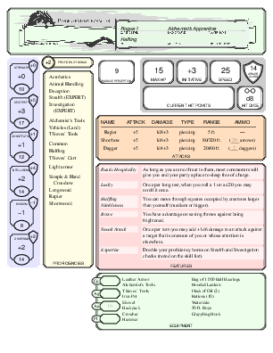

When I play D&D, I love the convenience of a paper character sheet. Everything I need to know is right in front of me; there is no mousing, clicking, tapping, or other fiddling with devices. But when my character levels up or prepares new spells, updating a paper sheet is a nuisance, and so is copying out my character to a new sheet. This project tries to provide the best of both worlds.
This project works with a “digital character sheet” that is plain text and is meant to be edited and maintained with a simple, ordinary text editor like Emacs, vim, or Notepad. The text of the character sheet is a form of YAML (decent beginner tutorial), which I consider decently user-friendly while still being machine-readable. A character sheet might start something like this:
CHARACTER NAME: Mario Greymist
CLASS: Rogue
LEVEL: 20
PLAYER NAME: Steve
RACE: Dragaeran
ALIGNMENT: Chaotic good
STR: 10
DEX: 20
CON: 14
INT: 12
WIS: 15
CHA: 16
PROFICIENCIES:
- Perception
- Sleight of Hand
-
- Daggers
# ... and so onThe software can then produce a PDF suitable for printing and using at the table.
Preview:
.
The software runs on Linux—the Angry GM uses Linux now, you know—but for those who don’t wish to fool around with installing it and getting it to work, I provide a web service.
Most of the web service is just a big web form that you fill in with the values that describe your character. The service does a little calculation (modifiers from your stats, proficiency bonus from your level), but most of the grunt work is left to you (how many spell slots your character has at each level, for example).
The key bits are at the top. When you are first getting started you might try something like this:
Go to the web service and select a pregenerated character from one of the dropdowns. Then click “Load this character.”
Fill in missing fields, edit what’s there, and otherwise make the character your own.
Click the “Generate PDF” button to see what your character sheet will look like.
Click the “Download name.yaml” button to save your work.
In the long term, you will ideally use the service something like this:
Edit your YAML character sheet on the comfort of your own machine.
Go to the web service and use the “Load YAML file” button to load your character sheet into the web form.
Get PDF by clicking “Generate PDF.”
AI doco :-(
quickstart
LaTeX
bespoke macros
YAML.md
I have yamls.
ChatGPT can help.
No traits, bonds, etc. I don’t believe in them. No electrum pieces
i am not a graphic designer. Thanks to “Alyssa.”
3col silverpine
hoping for more